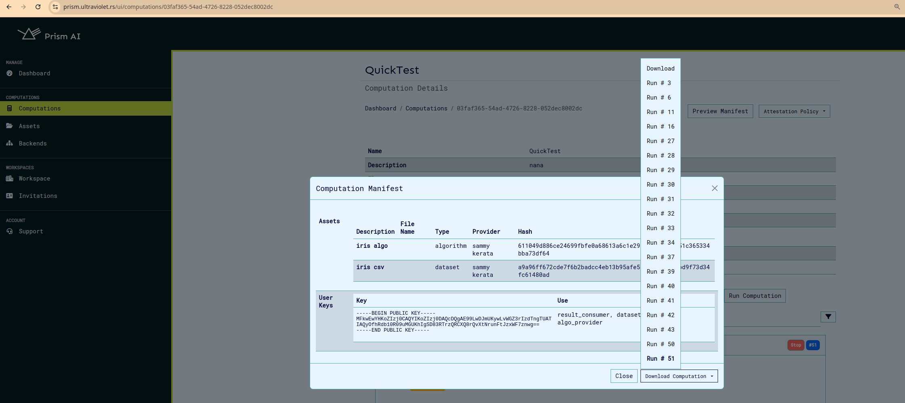

Computations#
The computations service provides a means to manage computations, with functions such as computation creation, update, deletion, and running.
Add Computation#
In order to create computation, we can to provide the following content:
curl -sSiX POST https://prism.ultraviolet.rs/computations -H "Content-Type: application/json" -H "Authorization: Bearer <user_token>" -d @- << EOF
{
"name": "<name>",
"description": "<description>",
"backend_id": <backend_id"
]
}
EOF
On the ui this can be done on this page as shown here

Example:
curl -sSiX POST https://prism.ultraviolet.rs/computations -H "Content-Type: application/json" -H "Authorization: Bearer <user_token>" -d @- << EOF
{
"name": "Machine Diagnostics Analysis",
"description": "Performing diagnostics analysis on machine data",
"backend_id": "fde3263e-70b8-4ce9-9f3c-4a203a0dcdf5",
"agent_config": {
"log_level": "debug"
}
}
EOF
Response:
HTTP/1.1 201 Created
Content-Type: application/json
Location: /computations/240be921-5758-4ffa-9ed3-97e6e72e97ea
Date: Thu, 02 May 2024 14:29:22 GMT
Content-Length: 0
Agent Configuration#
The Agent Config feature allows users to configure TLS (Transport Layer Security) settings and logging levels for computational agents. This configuration is accessible through the Agent Config modal in the New Computation interface.
TLS Configuration Options#
The system supports four TLS configuration modes:
-
Attested TLS
-
Basic TLS configuration with attestation verification during the TLS handshake.
- No additional certificate or key files required.
-
Suitable for environments requiring basic secure communication.
-
Mutual TLS
-
Requires bi-directional authentication
- Required files:
- Key File
- Certificate File
- Server CA File
- Client CA File
-
Provides highest level of security with mutual authentication
-
TLS
-
Standard TLS configuration
- Required files:
- Key File
- Certificate File
-
Suitable for environments requiring encrypted communication without mutual authentication
-
No TLS
-
Disables TLS security
- No additional configuration required
- Should only be used in secure, isolated environments
- Not recommended for production deployments
Log Level Configuration#
-
Info: Standard logging level for general operational information
-
Logs important events and milestones
- Recommended for normal operation
-
Provides good balance of information without excessive detail
-
Debug: Detailed logging for troubleshooting
-
Includes extensive operation details
- Useful during development and debugging
-
May impact performance
-
Warn: Warning-level messages only
-
Logs potentially harmful situations
- Does not log normal operational information
-
Useful for monitoring potential issues
-
Error: Critical issues only
- Logs only error conditions
- May miss important operational information
Best practices for log levels#
- Use Info for normal operations
- Enable Debug temporarily for troubleshooting
- Use Error only when minimal logging is required
File Requirements#
Key File#
- Required for: Mutual TLS, TLS
- Format: PEM-encoded private key
- Purpose: Authentication of the agent
Certificate File#
- Required for: Mutual TLS, TLS
- Format: PEM-encoded certificate
- Purpose: Identity verification of the agent
Server CA File#
- Required for: Mutual TLS only
- Format: PEM-encoded CA certificate
- Purpose: Verification of server certificates
Client CA File#
- Required for: Mutual TLS only
- Format: PEM-encoded CA certificate
- Purpose: Verification of client certificates
Implementation Steps#
- Access the Agent Config modal through the "Enter Agent Config" button on create/update computation page.
- Select appropriate TLS Configuration mode
- Set desired Log Level based on operational requirements
- For Mutual TLS or TLS modes:
- Upload required certificate and key files
- Verify file formats and permissions
- Click "Close" to save configuration
Troubleshooting#
Common issues and solutions:
Certificate Issues#
- Verify certificate chain validity
- Check certificate expiration dates
- Ensure proper file permissions
Connection Problems#
- Verify all required files are properly uploaded
- Check network connectivity
- Confirm firewall rules allow TLS traffic
- Restart the computation
Authentication Failures#
- Verify certificate-key pairs match
- Check CA trust chain
- Confirm client/server certificate compatibility
Example: Attestated TLS configuration#
Agent can be configured to run with attested TLS.
- Set agent tls configuration to aTLS. Click on close to save config and click the update/create button to save the computation.
- To confirm aTLS was configured, click on the update computation button.
- Next Run the computation and wait for the virtual machine provisioning to be complete.
-
Download the attestation policy. This file is used to set the expected values in the attestation report and is required for validation.
-
Finally to connect to agent, we need to configure the env variables on cli.
export AGENT_GRPC_URL=<backend_host>:<agent_port>
export AGENT_GRPC_ATTESTED_TLS=true
export AGENT_GRPC_ATTESTATION_POLICY=<path_to_attestation_policy_file>
after this configuration you can connect to agent normally using cli and perform operations on cli such as algo/data upload etc.
Calculating measurement manually (optional)#
Optionally, you can calculate and confirm the measurement in the attestation report. You'll need the kernel and rootfs file which can be downloaded from cocos releases based on versions.
to calculate the expected measurement:
OVMF_CODE=/home/cocosai/danko/test/ovmf/OVMF.fd
INITRD="/home/sammy/rootfs.cpio.gz"
KERNEL="/home/sammy/bzImage"
LINE='"quiet console=null rootfstype=ramfs"'
./build/cocos-cli sevsnpmeasure --mode snp --vcpus 4 --vcpu-type EPYC-v4 --ovmf $OVMF_CODE --kernel $KERNEL --initrd $INITRD --append "$LINE"
Once calculated this can be replaced on the attestation policy file using:
./build/cocos-cli backend measurement <base64-string-of-measurement> <attestation_policy.json file>
Calculating the host-data (Optional)#
The host data set on the virtual machine is based on the computation mmanifest. The manifest should be downloaded from the computation page. Click on preview manifest and then download the manifest for the specific computation run.

The host data value us calculated using the cli as below:
./build/cocos-cli checksum <path-to-manifest-json-file> --manifest -b
This can also be edited into the downloaded attestation policy as below:
./build/cocos-cli backend hostdata <base64-string-of-measurement> <attestation_policy.json file>
Example: mTLS and TLS configuration#
To ensure secure communications, prevent unauthorized access, data interception, and man-in-the-middle (MITM) attacks in Prism and COCOS Transport Layer Security (TLS) and Mutual TLS (mTLS) features can be enabled as described above. TLS/ mTLS configurations ensures that:
- Algorithms and Datasets uploaded to Agent and Results downloaded from agent through the CLI remains private.
- The integrity of data is preserved (i.e., no tampering).
- The Agent's identity is verified through a server certificate either issued by a trusted Certificate Authority (CA) or self-signed
For TLS connection:
- The CLI connects to the Agent.
- Agent shows its certificate to the CLI.
- CLI verifies that certificate.
- CLI sends data to the Agent in an encrypted communication channel.
For MTLS connection:
- CLI connects to the Agent.
- Agent shows its certificate to the CLI.
- CLI verifies that certificate.
- CLI shows its certificate to the Agent.
- Agent verifies that certificate and allows the CLI to send requests.
- CLI sends data to the Agent in an encrypted communication channel.
To generate your own certificates for configuring either of the modes:
CLIENT_ORG_UNIT="example_prism_cli"
SERVER_ORG_UNIT="example_prism_agent"
WORK_DIR=""
# 1. Generate CA's private key and self-signed certificate
openssl req -x509 -sha256 -newkey rsa:4096 -days 365 -nodes -keyout "$WORK_DIR/ca-key.pem" -out "$WORK_DIR/ca-cert.pem" -subj "/CN=Example_Selfsigned_ca/O=ExampleOrg/OU=example_ca/emailAddress=info@example.com"
echo "CA's self-signed certificate"
openssl x509 -in "$WORK_DIR/ca-cert.pem" -noout -text
# 2. Generate server's private key and certificate signing request (CSR)
openssl req -newkey rsa:4096 -sha256 -nodes -keyout "$WORK_DIR/server-key.pem" -out "$WORK_DIR/server-req.pem" -subj "/CN=Example_Selfsigned/O=ExampleOrg/OU=$SERVER_ORG_UNIT/emailAddress=info@example.com"
# 3. Use CA's private key to sign web server's CSR and get back the signed certificate
openssl x509 -req -in "$WORK_DIR/server-req.pem" -days 365 -CA "$WORK_DIR/ca-cert.pem" -CAkey "$WORK_DIR/ca-key.pem" -CAcreateserial -out "$WORK_DIR/server-cert.pem" -extfile "$WORK_DIR/ext/server-ext.cnf" -extensions v3_req
echo "Server's signed certificate"
openssl x509 -in "$WORK_DIR/server-cert.pem" -noout -text
# For mTLS
# 4. Generate client's private key and certificate signing request (CSR)
openssl req -newkey rsa:4096 -sha256 -nodes -keyout "$WORK_DIR/client-key.pem" -out "$WORK_DIR/client-req.pem" -subj "/CN=Example_Selfsigned/O=ExampleOrg/OU=$CLIENT_ORG_UNIT/emailAddress=info@example.com"
# 5. Use CA's private key to sign client's CSR and get back the signed certificate
openssl x509 -req -in "$WORK_DIR/client-req.pem" -days 365 -CA "$WORK_DIR/ca-cert.pem" -CAkey "$WORK_DIR/ca-key.pem" -CAcreateserial -out "$WORK_DIR/client-cert.pem" -extfile "$WORK_DIR/ext/client-ext.cnf" -extensions v3_req
echo "Client's signed certificate"
openssl x509 -in "$WORK_DIR/client-cert.pem" -noout -text
Example extension file:
[req]
req_extensions = v3_req
distinguished_name = req_distinguished_name
[req_distinguished_name]
[v3_req]
basicConstraints = CA:FALSE
keyUsage = nonRepudiation, digitalSignature, keyEncipherment
subjectAltName = @alt_names
[alt_names]
DNS.1 = localhost
DNS.2 = <agent host name>
# IP addresses
IP.1 = <agent host ip>
To configure TLS for agent on the ui:
- Access the Agent Config modal through the "Enter Agent Config" button on create/update computation page.
- Select the TLS option from the TLS Configuration drop down.
To configure mTLS for agent on the ui:
- Access the Agent Config modal through the "Enter Agent Config" button on create/update computation page.
- Select the mTLS option from the TLS Configuration drop down.
To connect cli to agent, we need to configure the env variables on cli.
For mTLS:
export AGENT_GRPC_URL=<backend_host>:<agent_port>
export AGENT_GRPC_CLIENT_CERT=<path_to_generated_client_cert>
export AGENT_GRPC_CLIENT_KEY=<path_to_generated_client_key>
export AGENT_GRPC_SERVER_CA_CERTS=<path_to_generated_server_ca_cert>
For TLS:
export AGENT_GRPC_URL=<backend_host>:<agent_port>
export AGENT_GRPC_SERVER_CA_CERTS=<path_to_generated_server_ca_cert>
After this configuration you can connect to agent normally using cli and perform operations on cli such as algo/data upload etc.
It is important to note that the Agent is the server and cli the client. Therefore, upload server generated cert, key on the UI as shown above and configure certificates generated for client on CLI.
Retrieve Computations#
In order to get all computations:
curl -sSiX GET https://prism.ultraviolet.rs/computations -H "Authorization: Bearer <user_token>"
Example:
curl -sSiX GET https://prism.ultraviolet.rs/computations -H "Authorization: Bearer <user_token>"
Response:
HTTP/2 200
content-type: application/json
date: Mon, 27 May 2024 11:37:50 GMT
x-frame-options: DENY
x-xss-protection: 1; mode=block
content-length: 433
{"computations":[{"id":"f025d311-193a-469b-b504-f137e0b768c2","name":"name 1","status":"executable","owner":"e20aaa5a-95d7-444a-8471-51c67082adbf","start_time":"2024-05-27T11:36:42.99242Z","end_time":"0001-01-01T00:00:00Z","algorithm":{},"agent_config":{"log_level":"","cert_file":"","server_key":"","server_ca_file":"","client_ca_file":"","attested_tls":false},"agent_port":"","backend_id":"cbaf711f-a086-48e0-bea1-a53a9650ba9c"}]}
On the UI the listed computations appear so:

Retrieve Computation Information#
In order to get one specific computation, by ID:
curl -sSiX GET https://prism.ultraviolet.rs/computations/<computation_id> -H "Authorization: Bearer <user_token>"
Example:
curl -sSiX GET https://prism.ultraviolet.rs/computations/f025d311-193a-469b-b504-f137e0b768c2 -H "Authorization: Bearer <user_token>"
Response:
HTTP/2 200
content-type: application/json
date: Mon, 27 May 2024 11:39:22 GMT
x-frame-options: DENY
x-xss-protection: 1; mode=block
content-length: 414
{"id":"f025d311-193a-469b-b504-f137e0b768c2","name":"name 1","status":"executable","owner":"e20aaa5a-95d7-444a-8471-51c67082adbf","start_time":"2024-05-27T11:36:42.99242Z","end_time":"0001-01-01T00:00:00Z","algorithm":{},"agent_config":{"log_level":"","cert_file":"","server_key":"","server_ca_file":"","client_ca_file":"","attested_tls":false},"agent_port":"","backend_id":"cbaf711f-a086-48e0-bea1-a53a9650ba9c"}
The view computation page appears as below, it also contains buttons to edit, run, delete and view computation logs and events.
Update Computations Information#
In order to update computation:
curl -sSiX PUT https://prism.ultraviolet.rs/computations/<computation_id> -H "Content-Type: application/json" -H "Authorization: Bearer <user_token>" -d @- <<EOF
{
"name": "[computation_name]",
"description": "[computation_description]",
"datasets": ["[dataset_1]", "[dataset_2]", "[dataset_3]"],
"algorithm": ["[algorithm_1]", "[algorithm_2]", "[algorithm_3]"],
}
EOF
Example:
curl -sSiX PUT https://prism.ultraviolet.rs/computations/8b131663-058d-4e8f-8ccb-cc83c3f9e694 -H "Content-Type: application/json" -H "Authorization: Bearer <user_token>" -d @- <<EOF
{
"name": "CNC Machine Diagnostics Analysis",
"description": "Performing diagnostics analysis on CNC machine data",
"result_consumers": [
"3ed2a2ad-8251-484c-a39b-bdb82f122f67",
"622d4b11-1b06-426e-baf6-e80d7025f961"
]
}
EOF
Response:
HTTP/2 200
content-type: application/json
date: Mon, 27 May 2024 11:51:25 GMT
x-frame-options: DENY
x-xss-protection: 1; mode=block
content-length: 0
The update computation page appears as below:

Computation export and import#
Prism allows users to export and import computations in both JSON and CSV formats. When exporting as JSON, all details of a computation are bundled into a single file, which can later be imported to recreate the computation with the provided data. Alternatively, multiple computations can be uploaded using a CSV file, which contains the relevant details for each computation. You can find a sample CSV file in the Prism repository here. When importing computations, ensure that all user IDs included in the file are valid and correspond to registered users in the workspace, including both backend and user IDs.
A sample computation that can be uploaded as json is shown:
{
"id": "185e61f4-2fd1-47c3-b8e7-1bf6a8466b79",
"name": "sample_computation",
"description": "sample",
"owner": "f07b7716-2737-4228-9d80-d9df4ab5ee53",
"start_time": "0001-01-01T00:00:00Z",
"datasets": [
{
"provider": "f07b7716-2737-4228-9d80-d9df4ab5ee53",
"hash": "171ae99ff0449d52cd37f824eec20f56d4efbe322e022e1df02a89eabc16209c"
},
{
"provider": "f07b7716-2737-4228-9d80-d9df4ab5ee53",
"hash": "3b8aea5a74d179a445e86ce23d2fc24c8cd65d34f19798cb8852a7bcf945b2ae"
},
{
"provider": "f07b7716-2737-4228-9d80-d9df4ab5ee53",
"hash": "64a6eb1ed400d9b8139d64ef21641e0a930cda8008e21d2b055f1ae91a2c710a"
}
],
"algorithm": {
"provider": "f07b7716-2737-4228-9d80-d9df4ab5ee53",
"hash": "9567a45920974a3261f9e897b3da7e49a391728f607f36f0ad6e8f5ec8a2041b"
},
"result_consumers": ["f07b7716-2737-4228-9d80-d9df4ab5ee53"],
"agent_config": {
"log_level": "debug",
"cert_file": "",
"server_key": "",
"server_ca_file": "",
"client_ca_file": "",
"attested_tls": false
},
"backend_id": "9a8d67b6-9298-4393-81c6-8b7958a8cebf"
}
Upload of computations can be done on the computations page, the files accepted are json and csv.
Any computation can be downloaded by clicking the download button when you view the desired computation.
Run Computation#
In order to get one specific computation, by ID:
curl -sSiX POST https://prism.ultraviolet.rs/computations/<computation_id>/run -H "Content-Type: application/json" -H "Authorization: Bearer <user_token>"
Example:
curl -sSiX POST https://prism.ultraviolet.rs/computations/8b131663-058d-4e8f-8ccb-cc83c3f9e694/run -H "Content-Type: application/json" -H "Authorization: Bearer <user_token>"
Response:
HTTP/1.1 200 OK
Content-Type: application/json
Date: Fri, 03 May 2024 08:37:24 GMT
Content-Length: 0
Remove a Computation#
In order to delete computation:
curl -sSiX DELETE "https://prism.ultraviolet.rs/computations/<computation_id>" -H "Authorization: Bearer <user_token>"
Example:
curl -sSiX DELETE "https://prism.ultraviolet.rs/computations/8b131663-058d-4e8f-8ccb-cc83c3f9e694" -H "Authorization: Bearer <user_token>"
Response:
HTTP/1.1 204 No Content
Content-Type: application/json
Date: Thu, 10 Aug 2023 07:34:17 GMT
X-Frame-Options: DENY
X-Xss-Protection: 1; mode=block
User Keys#
Cocos implements a public-key cryptography system for user authentication and role management in its multiparty confidential computing platform. Each user requires only a single public-private key pair per computation, regardless of how many roles they hold in that computation. Private keys are used for command-line operations.
Cocos supports three types of cryptographic keys:
- RSA
- ECDSA
- Ed25519
Key Usage Workflow#
Registration Phase#
- User generates one public-private key pair
- User provides their public key when being assigned to the computation
- System associates the public key with all of the user's designated roles
Operation Phase#
Users use the same private key for all CLI operations, regardless of role:
Security Considerations#
Private Key Handling#
- Private keys should never be shared
- Private keys should be stored securely
- Private keys are only used locally with CLI operations
- One private key is sufficient for all roles in a computation
Public Key Distribution#
- Public keys are safe to share and can be viewed in the manifest
- Public key must be registered once before participation
- Same public key is used for all roles in the computation
Best Practices#
- Keep private keys secure and backed up
- Register public key once before beginning computation participation
- Verify all role assignments are associated with your single key pair by viewing the manifest
- Consider using separate key pairs for different workspaces and computations